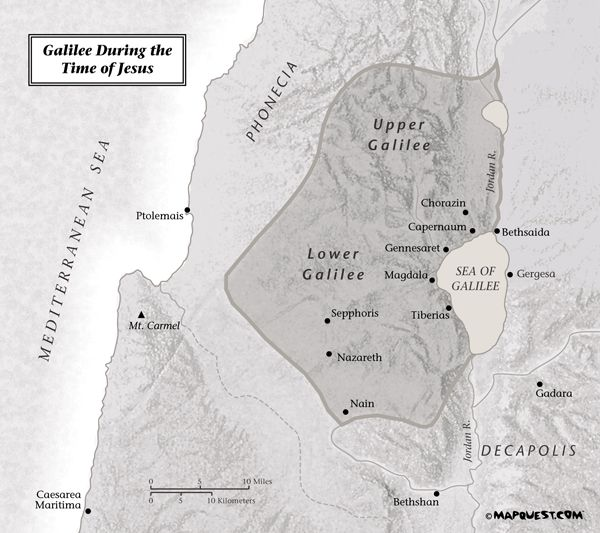
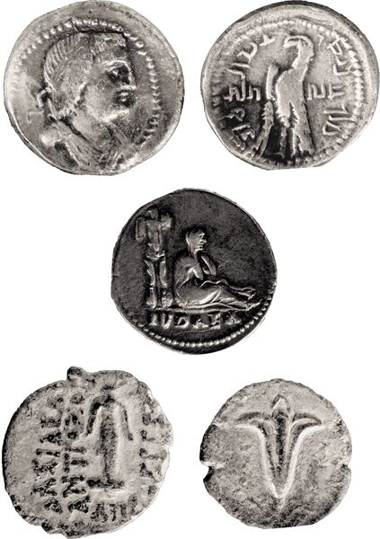

The Gospel according to Matthew
One of the pressing issues for the community that gathered around Jesus and persisted beyond his death was continuity. This is no simple question, but comes to us in two related forms: (1) What is the relationship between the earthly life of Jesus and the continuing commitments and existence of the church that seeks to order itself after him in discipleship? (2) What is the relation of the earthly life and ministry of Jesus to the activity of God and faith of Israel prior to Jesus’ birth?
The first book in the NT does not circumvent these central questions, but begins to address them forthrightly, and immediately in its opening chapters. For this reason, the Gospel of Matthew, often called the First Gospel because of its location in the NT, functions as an effective bridge within the Christian canon of Scripture — from the OT to the NT. Readers of the Gospel of Matthew find here a portrayal of Jesus with deep roots in the OT together with branches that clearly embrace the church that grew out of Jesus’ own ministry to restore Israel.
This means, on the one hand, that Matthew has explored the vital relationship between Jesus’ life and the history and hope of God’s historic engagement with Israel. By locating the beginning of his biography of Jesus (1) in the identification of Jesus in relation to David and Abraham (1:1), (2) in his rehearsal of Jesus’ ancestral heritage as a Jew (1:2–17), and (3) in the affirmation of Jesus’ status as the Jewish Messiah and Son of God (chs. 1–2), Matthew avers that the events of Jesus’ career cannot be understood adequately apart from the grand story of God’s interactions with and promises to Israel.
On the other hand, throughout the last two millennia, the Gospel of Matthew has justifiably been esteemed as “the Gospel of the church.” Matthew is the only NT Gospel that employs the word ekklēsia (“church” — 16:18; 18:17), and one finds in the pages of this Gospel heightened concerns with church discipline, liturgical practices, and mission (e.g., 6:9–13; 18; 26:26–28; 28:16–20). Thus the Evangelist has brought traditions about Jesus to bear on the needs of the still youthful Christian community struggling with important issues of power and authority, identity and witness, and, so, of internal behavior and relations. Insisting on the church’s genesis in the mission and message of Jesus and its continuity with historic Israel, Matthew works to aid his readers as they endeavor to find their way as a new religious movement in the Mediterranean world of the first century.
These and related data from the Gospel of Matthew speak to the fundamental coherence between Israel and the church via the biography of Jesus. At perhaps the most obvious level, continuity is guaranteed by the episodes of the gathering and teaching of disciples and the narration of the resurrection and appearances of Jesus in Matthew. These intimate the renewal of Israel and the coherence from Jesus to the community of his disciples with regard to authority, mission, and message. At a perhaps more profound level, historical and theological harmony is accomplished by means of a literary-theological innovation that is often more implicit than developed in the Gospel. This is the merging of the times or “eras” — that is, the blending of the time of Jesus with that of the church, as though they were coterminous. The earthly Jesus is none other than the exalted One whose ongoing presence invites worship and faithful mission. The disciples are Jesus’ first followers, of course, but Matthew’s narrative also invites future generations of disciples to identify themselves with these first followers — so that their failures and successes become warnings and examples. This does not mean that the Matthew has presented the life of Jesus as more ancient novel than biography, as though he read his own concerns and those of his audience into the situations and people of Jesus’ life and ministry. He has not, like some medieval painting, presented Jesus in garments or actions so anachronistic as to render him unrecognizable or irrelevant to first-century Galilee and Judea. Rather, Matthew manifests in his Gospel the task of the Evangelist: to demonstrate, by telling the story of Jesus, the ongoing claim on God’s people and, indeed, on all humanity of the pivotal work of God in Jesus Christ.
To insist that the Gospel of Matthew is concerned especially with continuity and coherence, however, does not mean that the transition from Judaism to Jesus and the church is an easy or smooth one. The genealogy with which the Gospel opens may identify Jesus as the Messiah, and the ensuing narrative of Jesus’ birth may depict him as the culmination of Israel’s history and hopes, but these opening chapters also contain unexpected and unsettling notes. The inclusion of women in a genealogy is not completely without precedent, but the presence in Jesus’ ancestral list of such controversial women in Israel’s history as Tamar, Rahab, Ruth, and Bathsheba can hardly be said to work in his favor, if Matthew’s primary point is to establish for Jesus and the church a winsome continuity with Israel of old. Moreover, in ch. 2, although a choir of voices — including Gentile magi, Herod the Great, Jewish chief priests and scribes, and Hebrew prophets — together vocalize the identity of Jesus as the one born to be “King of the Jews,” only the Gentile magi respond to this news with celebration and worship. Herod “and all Jerusalem with him” (2:1–3) exhibit distress at the news of the Messiah’s birth, and the Jewish leaders and inhabitants of Jerusalem apparently join Herod in seeking the life of this potential rival to kingly power (2:20: “those who were seeking the child’s life”). In this way, the Evangelist locates Jerusalem not simply at the center of the Jewish world, a status it occupied historically, but even more importantly as the capital of opposition to Jesus. Later in the narrative, when Jesus himself journeys finally to Jerusalem, we are not surprised to see him encounter the fate that was laid out for him first at the time of his birth: rejection and death.
The Gospel of Matthew is thus not only a narrative of continuity with the people of God but also of conflict. And herein lies a pressing issue for readers of this Gospel: How are we to construe Matthew’s understanding of the relationship between Jesus and Judaism, and, thus, between his followers (the church) and Judaism? Such striking emphasis is given the motif of hostility in this Gospel that some scholars in the late twentieth century simply dismissed Matthew as anti-Jewish. This is a simplistic and one-sided reading of Matthew. It fails to account for the Gospel’s unmitigated concern with the nature of authentic life before God and thus the genuine character of God’s people, and it fails to take seriously the variegated representation of Jesus’ position vis-à-vis the history, law, people, and traditions of the Jews. What, then, is Matthew’s agenda in his presentation of the Jewish people and Jewish institutions? Such questions must occupy us later in this chapter, following a discussion of Matthew’s presentation of the life of Jesus.
4.1. THE PLAN OF THE GOSPEL OF MATTHEW
Matthew has left his readers no shortage of structural features by which to help make sense of his emphases. In fact, he has left so many that it has been difficult to sketch his overall narrative plan with much certainty.
It is important, first, to take seriously this narrative’s status as a Greco-Roman biography. “Genres,” it will be recalled, refer to the category or form of literature to which a document belongs; they constitute more or less formal and implicit “contracts” between authors and their audiences, launching certain expectations for interpreting particular texts (see pp. 5–6 above). Since Matthew’s Gospel is a kind of ancient biography, we may anticipate a primary focus on Jesus’ career and death and a pronounced emphasis on the embodiment within the narrative of esteemed values. Given the Jewish orientation of the Gospel of Matthew, we may also expect abundant evidence of the outworking of the divine will in historical narrative, in ways reminiscent of such biographically oriented scriptural materials as those associated with Moses, Abraham, or Elijah. Recognition of the biographical genre of the Gospel of Matthew raises a cluster of additional expectations, including:

• a focus on Jesus’ public life, organized either chronologically or topically (or both),
• indications concerning how and why Jesus would have been regarded as one who deserved biographical treatment,
• a commitment on the part of the author to hold in abeyance the temptation for wholesale creation of events,
• an overall interpretive aim indicating the cause-and-effect relations among the events that make up the narrative, and
• a presentation of Jesus and his behavior as exemplary for the Gospel’s audience.
Such expectations as these are pivotal for our reading of the Gospel of Matthew, but are hardly peculiar to Matthew’s narrative. The same might be said of the Gospels of Mark and John and, to a lesser degree, the Gospel of Luke (which, together with the Book of Acts, belongs to the related genre of historiography). What more can be said of the plan of Matthew’s Gospel?
Because we are reading a narrative with a main character or primary protagonist, Jesus, much can be learned about the emphases of the Gospel of Matthew by attending to Jesus’ first and last words in the Gospel. A protagonist’s first words often help to set the agenda for the work as a whole, while “last words” are often not only final but climactic in function. Jesus’ first words in Matthew respond to John the Baptist’s attempt to prevent Jesus’ baptism. Jesus declares, “Let it be so now, for it is proper for us in this way to fulfill all righteousness” (3:15). This utterance — which contains two terms, plēroō (“fulfill”) and dikaiosynē (“righteousness”), that are crucial to the ensuing narrative — serves a programmatic role for the Evangelist. Even before the onset of his public ministry, Jesus manifests, first, his capacity to discern “what is right” and, second, his commitment to obeying it. In this narrative location, “what is right” can refer to nothing less than the will of God. The phrase “the will of God” does not refer superficially to rules and regulations, as though Jesus might announce at this early juncture of his career his commitment to embrace God’s ordinances in such a limited sense. Rather, Jesus announces at his baptism both his grasp of the ancient and ongoing intention of God and his resolve to live out that intention. He thus situates himself firmly and centrally within the narrative of God’s will as its climax. The divine voice at Jesus’ baptism (“This is my Son, the beloved, in whom I am well pleased,” 3:17) affirms Jesus’ understanding of the necessity of his baptism using words borrowed from Ps 2:7 and Isa 42:1, correlating this event with the consummation of the hopes embedded in the Scriptures of Israel. Jesus actualizes the hopes of Israel as one who grasps and conforms to the will of God, and in doing so exemplifies the commitments and behavior expected of his true followers.
The final words of Jesus are spoken to his disciples on a Galilean mountain:
“All authority in heaven and on earth has been given to me. Go therefore and make disciples of all nations, baptizing them in the name of the Father and of the Son and of the Holy Spirit, and teaching them to obey everything that I have commanded you. And remember, I am with you always, to the end of the age.” (28:18–20)
This paragraph is both retrospective and prospective — calling to mind “everything that I have commanded you” at the same time that it outlines the church’s missionary and disciple-making agenda. The continuity between Jesus and his disciples with respect to message, mission, and authority is undergirded and highlighted by the promise of Jesus’ ongoing presence within the community of his faithful disciples.
Within the plan of the Gospel of Matthew, Jesus’ final words play yet another role, for they complete an inclusio (i.e., they help to frame the whole Gospel) around the notion of the ongoing, redemptive presence of God. In the Gospel’s opening account, an angel of the Lord directs Joseph to name Mary’s son “Jesus,” “for he will save his people from their sins” — this in fulfillment of Isaiah’s prophecy, “‘They shall name him Emmanuel,’ which means, ‘God is with us’” (Matt 1:22–23). The connection between this scene and Jesus’ closing promise, “I am with you always, to the end of the age,” can hardly be accidental. Together with a similar promise in 18:20 (“Wherever two or three are gathered in my name, I am there with them”), these declarations ground a central motif of Matthew’s Gospel: In Jesus, the Messiah and Son of God, God is present to provide redemption for his people. In addition, the progression of these three affirmations clarifies the identity of “his people,” the ones for whom Jesus’ advent spells salvation. “His people” are comprised of the church, those who gather in allegiance and submission to him and who carry out the mission that takes its direction and authority from Jesus himself. The form of Jesus’ closing words, “to the end of the age,” allows Matthew’s own audience to read themselves into the community of discipleship and salvation among whom and for whom Jesus is redemptively present.
What of other structural features within the Matthean Gospel that help to shape its interpretation? Students of Matthew have long been impressed with the clustering of the teachings of Jesus into five lengthy discourses, each of which concludes with “When Jesus had finished these words. . . .” These discourses are intertwined with lengthy sections of narrative, with the result that some have imagined the story of Jesus in Matthew as having been presented in five books:
1. an introductory narrative (3:1–4:25) followed by Jesus’ teaching on the higher righteousness of the new community (chs. 5–7; see 7:28),
2. an introductory narrative (8:1–9:35) followed by Jesus’ teaching on the mission of the new community (ch. 10; see 11:1),
3. an introductory narrative (11:2–12:50) followed by Jesus’ teaching in parables (ch. 13; see 13:53),
4. an introductory narrative (13:54–17:21) followed by Jesus’ teaching about forgiveness and church discipline (ch. 18; see 19:1), and, finally,
5. an introductory narrative (19:2–22:46) followed by Jesus’ teaching on the judgment to come (chs. 24–25; see 26:1).
According to this framework, the main thrust of the Gospel is the nature of the church, with Jesus portrayed primarily in the garb of a teacher. Some interpreters have gone so far as to imagine that Matthew thus portrays Jesus as the New Moses presenting a New Torah. However, the alternation between narrative and discourse is not nearly so clean as this outline suggests, and in fact discourse material is well represented in material identified as narrative. More importantly, this way of thinking about the plan of the Gospel makes little room for the birth, death, and resurrection narratives of Jesus in Matthew; they simply do not fit the pattern! As a result, it is probably better to see the fivefold repetition of the formulaic phrase, “When Jesus had finished these words . . . ,” as transitional in function, helping to move the narrative forward. Together, these five lengthy discourses do not constitute a “new law,” then, but they do depict Jesus as authoritative teacher.
Yet another formula, “From that time on Jesus began . . . ,” appears in 4:17 and 16:21, points in the narrative where a new phase of Jesus’ ministry is initiated, allowing the Evangelist to sum up ahead of time the material that will follow. This allows for a threefold partitioning of the Gospel, in this case oriented much more centrally around christological affirmations. Thus,
1:1–4:16 presents the preparation of Jesus the Messiah, Son of God,
4:17–16:20 sets forward the proclamation of Jesus the Messiah to Israel, and
16:21–28:20 narrates the death and resurrection of Jesus the Messiah, Son of God.
Like biographies as they developed in the imperial period of Roman history, so Matthew seems thus to organize the ministry of Jesus topically.
Still other textual markers within the Matthean narrative might be championed as keys to understanding Matthew’s narrative plan. More likely is that all the structural features we have described, and others besides, serve primarily to move the narrative along toward its climax in Jesus’ death, resurrection, and postresurrection appearances. What is incontrovertible about Matthew’s plan is the gathering of Jesus’ teaching into discourses, each with its own thematic focus, and together accentuating the picture of Jesus as authoritative teacher. The importance of this narrative feature is highlighted in Jesus’ closing words in 28:18–20, which place a premium on the substance of Jesus’ teaching. Equally transparent is the biographical character of Matthew’s Gospel — that is, its primary focus on the bios or life of Jesus, with the result that we cannot escape its fundamental aim to promote a particular vision of Jesus’ person and work. Jesus is and remains at center stage throughout the Gospel.
In discerning the movement of the Gospel it is also important to recall the importance of conflict for narrative in general, and especially for Matthew’s account of Jesus. Finally, as might be expected of a biography, the narrative portions of the Gospel of Matthew follow a general chronological sequence, from birth to baptism, Galilean ministry, journey to Jerusalem, passion, resurrection, and postresurrection appearances. Woven into this chronological progress are the lengthy sections of Jesus’ teaching.
In what follows, then, we will make room for various structural features, but will allow neither of the previously mentioned formulas to determine our understanding of the progression of the narrative. Instead, priority will be given to the twists and turns the Matthean account takes in relation to the support and/or hostility Jesus receives, to the import of the placement of the major blocks of Jesus’ teaching within the narrative, and to the thematic (or topical) character of this “biography” of Jesus.
4.2.1. Preparation for the Ministry of Jesus the Messiah, Son of God (1:1–4:22)
Matthew opens his narrative of the public ministry of Jesus with an extended introduction, the primary focus of which is christological. That is, Matthew recounts the ancestry and birth of Jesus, followed by the preparation for Jesus’ ministry through baptism and temptation, in order to clarify the nature of Jesus’ person and mission and to set the stage for their subsequent development in the ensuing narrative.
The Gospel’s opening line functions as a superscription for Matthew’s portrayal of Jesus. Although many English translations render genesis in 1:1 as “the genealogy” (of Jesus Christ), it can be translated as “the book of origins.” Read in this way, the parallel in Gen 2:4; 5:1 is suggestive of something more auspicious. Just as “the book of origins” in Genesis refers to divine creation, so here it points to the consummation of God’s plan in the advent of Jesus. This ensures that we read the genealogy of Jesus as something more than a means of introducing yet one more person into the family tree. As the very first verse declares, Jesus is the Messiah, son of David and son of Abraham; soon, he will be introduced as the Son of God as well (see Matt 1:18–25; 2:15; 3:13–17; 4:1–11).
Genealogies typically function to establish someone’s status. The association of Jesus with David and Abraham in Matthew’s superscription is developed immediately in the genealogy and birth narrative to illuminate both the nature of Jesus’ messiahship and the wide reach of the salvation proffered in his coming. He is Messiah in the lineage of David, his coming marks the fulfillment of Israel’s hopes and God’s promises across the generations of God’s people, and the redemption he brings embraces Gentile as well as Jew.
Though the angel announces to Joseph that Jesus “will save his people from their sins” and the birth narrative is so Jewish in orientation that one might expect that “his people” will include only the Jews, there are many signs to the contrary in these opening verses. Abraham, it will be recalled, was to be the father of many nations. The introduction of Bathsheba as “the wife of Uriah” in the genealogy (1:6) brings to mind her marriage to a foreigner, Uriah the Hittite, with the result that she joins Tamar, Rahab, and Ruth (1:3, 5) as Gentile women among Jesus’ ancestry. Three magi “from the East,” Gentiles all, recognize in the stars testimony to the birth of the king of the Jews, and they come to pay him homage. From 3:13 on, Matthew seems to underscore Jesus’ orientation to Galilee; Jesus comes from Galilee to be baptized by John (3:13), returns to Galilee to proclaim the kingdom (4:12–17), and in Galilee calls his first followers (4:18–22). But this is “Galilee of the Gentiles” (4:15). In all these ways, the Evangelist signals the universalistic impulses of his narrative.
Matthew nevertheless portrays Jesus as one possessing impressive credentials among the people of Israel. Jesus appears in the birth narrative, and subsequently, in the guise of Moses. Like Moses, Jesus is threatened by a ruler and narrowly escapes, returns from exile on divine instructions, and so on. Each step of his birth and infancy is grounded in the fulfillment of Scripture (1:22–23; 2:15, 17–18, 23; cf. 2:5–6; 4:14–16). These inscribe the beginnings of Jesus’ life in the history of Israel and in scriptural words of promise, and they signal for Matthew’s audience that this Jesus is none other than the one to whom the Scriptures pointed. He is the one through whom the history and legacy of Israel will continue.
Matthew not only presents Jesus as son of David, son of Abraham, and the New Moses, but also stresses that he is the Son of God. Employing the words of Hos 11:1, Matthew identifies Jesus as God’s Son and thus as the embodiment of true, obedient Israel (Matt 2:15). We are prepared for this reading by the angelic announcement that Jesus was conceived by the Holy Spirit and born to a virgin; it is pressed further with the identification of Jesus as “my Son” by the heavenly voice in 3:17, then confirmed by Jesus’ unequivocal obedience and loyalty to God in the face of diabolic temptation (4:1–11).
Such positive notes regarding Jesus’ identity and God’s salvific embrace of the Gentile world stand in stark contrast to Matthew’s more negative portrayal of the Jewish reception of Jesus in these opening chapters. Clearly, the Jews read the signs and the Scriptures differently. Herod finds in Jesus’ birth the threat of rivalry, and the people of Jerusalem join their king — himself only half-Jewish — in his fear and malice (see 2:3, 20). Interestingly, the elite among the Jews, chief priests and scribes of the people, apparently do not recognize what the “wise men from the East” have seen: evidence of the birth of a Jewish Messiah. Jesus associates himself with the ministry of John the Baptist, and together Jesus and John “fulfill all righteousness” (3:15). This, however, is the very John whose vision of reform has propelled him into the wilderness where, apart from the temple, he stands over against the Pharisees and Sadducees, proclaims repentance, and invites baptism and confession of sin. John, moreover, speaks of the coming one who will judge between wheat and chaff (3:11–12). Thus established in the opening sections of Matthew’s Gospel is a motif that will add to the suspense and tragedy of the narrative, the motif of hostility.
4.2.2. Jesus Proclaims the Good News and Heals the Sick (4:23–9:34)
Matthew 4:23 marks the beginning of the second main section of the Gospel. This verse finds a close parallel in 9:35, for both speak of Jesus’ itinerancy and his “teaching in their synagogues, proclaiming the good news of the kingdom, and curing every disease and every sickness.” The first use of this formula highlights Jesus’ growing fame, however, and thus prepares for reports of Jesus’ teaching (chs. 5–7) and powerful deeds (chs. 8–9). The second comes after accounts of Jesus’ ministry of preaching and healing and thus stresses the need for assistance in the “harvest.” Not surprisingly, then, the next section of the Gospel contains a discourse (ch. 10) with Jesus’ instructions to his disciples regarding their involvement in mission. This parallelism underscores again the continuity between Jesus and his disciples alluded to earlier.
4.2.2.1. Introduction (4:23–25)
Matthew summarizes the nature of Jesus’ ministry throughout Galilee with three verbs — teach, preach, and heal. The content of Jesus ministry, given here as “the good news of the kingdom,” was communicated already in the same way at the close of the previous section: “Repent, for the kingdom of heaven is at the door!” (4:17). The same words were spoken by John the Baptist in 3:2. This ties the ministries of John and Jesus into God’s overarching salvific intervention, which Matthew envisions as a complex of events that have been set in motion but await final consummation. For John and Jesus, the nearness of the kingdom is the basis for human response: repentance. In the case of Jesus the kingdom’s advance is marked by ministries of proclamation and healing; both of these aspects of Jesus’ kingdom-ministry will be sketched in Matthew 5–9. Matthew’s audience will thus gain a clearer view of the nature of repentance and authentic life before God, in addition to a series of windows into how the advance of the kingdom spells good news for those who live beyond the pale of respectable society.
4.2.2.2. Jesus’ First Discourse (5:1–7:29)
Jesus’ first discourse, known almost universally as the Sermon on the Mount, is separated from its narrative context both by its content (teaching) and by an important structural feature: in 5:1 Jesus ascends the mountain, and in 8:1 he descends. This marks the beginning and end of the sermon and reminds us of Matthew’s interest in painting Jesus as the New Moses, deliverer and teacher of God’s people. This does not mean that the Sermon on the Mount can be read apart from the surrounding narrative material, however. Jesus’ words here cannot be separated from the subsequent record of his deeds, nor can the sometimes maverick quality of his teaching in chs. 5–7 be segregated from the presentation of Jesus’ authoritative status in chs. 1–4. As the narrative develops it will become increasingly transparent that Jesus “practices what he preaches” — that is, he embodies his own instruction — and that he insists that his followers do the same with regard to the will of God. Moreover, the salvation Jesus promises and the behavior he demands in this discourse are grounded in his sovereignty as the New Moses, the Messiah and Son of God.
A hill in Galilee, the traditional site of the Sermon on the Mount (Phoenix Data Systems, Neal and Joel Bierling)
Jesus’ first discourse has as its immediate audience the disciples, including at the very least those whom he has called in 4:18–22: Simon Peter, Andrew, James, and John. As Matthew presents it, there is another audience, the crowds; their identity is presently nondescript, but their presence makes it clear that Jesus’ words lay a claim on persons far beyond the narrow gathering of the disciples. What is more, by narrating Jesus’ address as he does, Matthew allows Jesus to speak beyond the narrative; the “you” to whom Jesus repeatedly addresses his words reaches even Matthew’s own audience and lays a claim on their lives. Just as Moses’ words in Deuteronomy speak to generations after the escape from Egypt, so Jesus speaks to future generations of his followers. Accordingly, all — the small group of Jesus’ disciples mentioned in Matt 5:1, the crowds, and those who read Matthew’s Gospel — are confronted with the same offer of divine blessing, demand for piety and ethical comportment, and threat of judgment as these are sketched within the Sermon.
Matthew 5–7 consists of three sections — a prologue (5:3–16), the body of the discourse (5:17–7:12), and the conclusion (7:13–29). The prologue, which contains Jesus’ Beatitudes, is a précis of Jesus’ dual vision. First, he highlights the abundance of God’s blessing, though, surprisingly, he names as the recipients of those blessings an unusual cast of characters: the poor in spirit, those who mourn, the hungry, and so on. Second, he anticipates the mission of the church (see 28:18–20), employing the metaphors of salt and light to underscore the grave importance of the witness of the church’s own life for its outward-looking mission.
The main body of Jesus’ sermon is framed with references to the law and prophets (5:17; 7:12) and is quite naturally concerned with the incarnation of the will of God in the lives of God’s people. Here Jesus holds in tension his commitment to the persistent authority of Torah and his own status as the legitimate interpreter of God’s will. His teaching, therefore, does not constitute an annulment of the Torah as much as it insists that God’s will in Scripture must be understood as “living Torah,” in need always of interpretation in new contexts. In this conviction Jesus was not unique among Jews in the Second Temple period, for many (especially among the Essenes and Pharisees) worked to articulate the ancient law for fresh situations. Startling, rather, is Matthew’s presentation of Jesus as the “only teacher” (see 23:8), who grounds his teaching in his own authority (see 7:29). Jesus “fulfills” Torah, and so his teaching and commandments are definitive for the people of God.
This perspective is underscored in the strongest possible way by the Sermon’s conclusion (7:13–29). No claim to vital association with the Lord can be made apart from obedience to Jesus’ instruction. In Matthew’s case, then, “righteousness” is not a gift from God (as though he were interested in how one might be “made right with God”); instead, for Matthew, one must show that one is right with God by behaving righteously. Even if persons speak of Jesus as “Lord,” even if they claim a personal relationship with him, even if they manifest in their lives such charismatic gifts as prophecy or the capacity to exorcise demons — none of these can substitute for “doing the will of my Father in heaven” (7:21). And “doing the will of my Father in heaven” is nothing less or more than “hearing these words of mine,” that is, of Jesus, “and acting on them” (7:24).
The first great sermon in the Matthean narrative, delivered in the second person, is difficult to read in a removed, dispassionate way, as though Jesus were speaking only to persons gathered around him on the hillside. Jesus’ repeated reference to “you” invites those who read this Gospel to consider how fully they should read themselves into the narrative. Are we, readers of Matthew’s Gospel, persons who assert ourselves within the community of God’s people? Do we claim for ourselves high status on the basis of piety and Spirit-endowed capacities? Those of Matthew’s audience who answer such questions in the affirmative can scarcely escape Jesus’ chastisement for their lack of obedience to the will of God. Such persons have come to mirror in their lives the dispositions of the Pharisees and Jewish leaders, and so, having failed to possess a righteousness that surpasses that of the scribes and Pharisees, have no place in God’s kingdom (5:20). This is not to say that Matthew sets himself against expressions of piety or charismatic expression, but rather that these must emanate from a life of obedience to God. The Sermon on the Mount spells out the form and substance of such a life.
4.2.2.3. Jesus’ Powerful Ministry (8:1–9:34)
Matthew 4:23 proposed a dual emphasis in Jesus’ kingdom-ministry: proclamation and healing. Having completed the first discourse, his first sustained proclamation of the kingdom, Jesus now turns to the healing of the sick. This is graphic testimony to the openness of this Evangelist to the sort of powerful, charismatic phenomenon mentioned in 7:15–23, but Matthew’s staging of this section of the Gospel prioritizes his interests. Miraculous deeds and those who perform them are not on that basis self-legitimating. As the Pharisees themselves will observe, the capacity for powerful deeds can be traced to quite disparate origins, including the diabolic (9:34). The association of Jesus’ Sermon on the Mount with these reports of healing and powerful deeds, first, forbids that we separate the content and authority of Jesus’ teaching from that of his healing ministry and, second, reminds us of the holistic and robust character of the salvation Jesus conveys. The audience for both forms of ministry activity remains the same, and both are viewed as manifestations of the in-breaking kingdom of God. In this section, the spotlight falls primarily on Jesus, while in the next section, beginning with 9:35, the narrative lens will enlarge to include the mission of the disciples.
Perhaps the most critical point of this section of Matthew’s Gospel is simply the potency of Jesus’ ministry. Miraculous events seem to be lined up, one after the other, with little connection between them or progression among them. Even if read in this way, what is said of Jesus’ ministry is significant. Repeatedly, Matthew depicts him as one who makes available the presence and power of God’s dominion to those dwelling on the periphery of Jewish society in Galilee — a leper, the slave of a Gentile army officer, an old woman, the demon-possessed, a paralytic, a collector of tolls, a young girl, and the blind. Typically, these accounts function at two levels simultaneously. On the surface, Matthew recounts the restoration to physical health of those who are diseased. Such a casual reading masks ancient views of health and healing, however, for it assumes modern, Western notions of medicine and biology. In a culture like that of ancient Palestine, where the whole of life was understood in a more integrated way, chronicles of restoration to physical health such as those Matthew narrates also recount the restoration to status within one’s family and community, the faith-full reordering of life around God, and the driving back of demonic forces. Thus, for example, cleansing a leper allows him new access to God and to the community of God’s people (8:1–4; see Leviticus 13–14), healing a paralytic is tantamount to forgiving his sins (Matt 9:2–8), extending the grace of God to toll collectors and sinners illustrates the work of a physician (9:9–13), and, as throughout the biblical tradition, recovery of sight serves too as a metaphor for the insight of faith (9:27–31).
If the powerful deeds of Jesus are the main focus of this narrative section, however, they are integrated into a more encompassing theme having to do with how people respond to Jesus’ ministry. This is most transparent at the close of this section, in 9:33–34, where the crowds take an overwhelmingly positive view but the Pharisees respond negatively. (See also the responses in 8:10, 27; 9:3, 8, 11.) In amazement, the crowds gush, “Never has anything like this been seen in Israel!” In an attempt to belittle Jesus and to counter his influence among the people, the Pharisees relegate his ministry to the realm of the demonic. The way the narrative holds in tandem these conflicting responses to Jesus illuminates Matthew’s agenda in the whole of chs. 8–9. Why is one of the first episodes of healing one that involves Jesus’ interaction with a Gentile (8:5–13)? This portends the end of Matthew’s Gospel, of course, with its focus on mission to “the nations” (28:20). In addition, in its own narrative context it serves also to indicate the means by which Gentiles might be embraced as God’s people — namely, through active faith. The “many [who] will come” from the far reaches of the earth to share in the kingdom banquet are those with faith who act on it, while “the heirs of the kingdom [who] will be thrown into the outer darkness” are those who fail to do so (8:11–12).
4.2.3. The Emergence of the Church in Israel (9:35–16:20)
Matthew’s report of Jesus’ missionary instructions to his disciples is in many ways closely tied to earlier material, for it shows how the mission of Jesus is to be recapitulated among his disciples. In fact, chs. 10 and 11 initiate an important transition within the narrative, bringing the disciples — and with them, the church — more and more onto center stage. According to Matthew, this is not accidental, but proceeds on the basis of intensifying hostility toward Jesus on the part of official Judaism. More and more, the disciples are said to form a coherent unit, until finally Jesus actually introduces the word “church” into the lexicon of this Gospel (16:18).
4.2.3.1. Jesus’ Second Discourse — On Mission (9:35–10:42)
As we have seen, Matt 9:35 repeats the earlier summary of Jesus’ ministry in 4:23. As with many instances of repetition, this one is marked by similarity as well as difference. On the one hand, the way these parallel summary statements bracket chs. 5–9 suggests that we are to think of these chapters as containing what was typical in the ministry of Jesus: throughout the course of his work, he proclaimed the gospel in word and deed in just this way. On the other, this second summary goes on to highlight Jesus’ recognition of the need for leadership for the people (9:36–37). And this leads into Matthew’s account of Jesus’ instructions for the mission of the disciples.
What is surprising about this new section of the Gospel is that, though Jesus summons, empowers, and sends his disciples (10:1, 5), they never seem to go anywhere. At the close of this training session, the narrative is occupied with Jesus’ teaching and preaching and does not follow the disciples’ ministry (Matt 11:1). This may be no more than a gap in the narrative, with Matthew’s audience left to imagine the missionary activity of the disciples in much the same way that they are to imagine the calling of twelve disciples. Matthew, after all, has narrated the calling of only five (see 10:1; 4:18–22; 9:9). The lack of a report of the mission of the disciples in this narrative context may serve another purpose, however; standing as they do apart from such a mission, his words of instruction take on an almost timeless quality, as though the narrator were seeking to shape the missionary life of his own audiences in this account. In this case, it is remarkable that Jesus’ instructions emphasize identification with himself, with his person and the form of his ministry. Like Jesus, the disciples/church will:
• have authority to exorcise demons and to heal (cf. 4:23; 9:34; 10:1, 8);
• proclaim the nearness of the kingdom (cf. 3:2; 4:17, 23; 9:35; 10:7);
• raise the dead and cleanse lepers (cf. 8:1–4; 9:18–26; 10:8); and
• experience inhospitality and rejection (cf. 5:39–42; 8:19–20; 9:34; 10:11–15, 16–23).
This concentration on identification with the Messiah may be remarkable, but it is not surprising — as Jesus teaches, “A disciple is not above his teacher, nor a slave above his master; it is enough for the disciple to be like his teacher, and the slave like his master. If they have called the master of the house Beelzebul, how much more will they malign those of his household!” (Matt 10:24–25).
One might entertain the possibility that Matthew has communicated mixed messages in his presentation of Jesus’ instruction. Twice in this discourse, Jesus limits the mission to the house of Israel (10:5–6, 23). At the same time, there is plenty of evidence that Jesus is in the process of constructing a new “household,” a family whose ties run deeper than ancestry and blood, whose fundamental identity is found in embracing the obedience, behavior, and fate of Jesus as its own. This paradox reflects the early experience of Jesus and his followers within the Gospel narrative, as well as that of those disciples outside the narrative — that is, Matthew’s audience: having begun within Israel, they increasingly find themselves in tension with Israel so that they are forced to ferret out their identity as God’s people with reference to values and sources other than family lineage.
4.2.3.2. Growing Hostility toward Jesus (11:1–12:50)
Nestled between the second and third of Jesus’ extended discourses is this section in which Matthew depicts the increasing opposition Jesus encounters in his itinerancy. At their meeting at the Jordan River, John the Baptist recognized Jesus as “the one who is more powerful” (3:11–14), but now the baptizer seems disenchanted with Jesus. “Shall we look for another?” he asks (11:3). John’s question provides the impetus for a rehearsal of Jesus’ remarkable deeds, and also of Jesus’ endorsement of John. But these serve to contrast Jesus’ assessment of John and summary of his own career with the rejection both have experienced by “this generation.” John played a pivotal role in the advent of God’s work of salvation, yet he was opposed and thrown into jail (4:12). God himself has revealed to Jesus his divine sonship (11:25–27), but this perspective has not been widely embraced — even by those cities who have experienced more than their share of God’s powerful deeds at the hands of Jesus.
John may have been disenchanted with respect to Jesus’ messianic identity, but his perplexity pales in the face of the opposition Jesus encounters from the Pharisees and synagogue leadership. “The crowds,” who up until this point have responded positively toward Jesus and have served in the narrative primarily as potential disciples — even they are likened to stubborn, unfaithful Israel in Moses’ day; like their predecessors, they will receive the judgment that falls on “this [evil] generation” (11:16; 12:45; cf., e.g., Exod 32:9). Clearly, Jesus is not the Messiah, Son of David, whom they have anticipated. The open invitation to follow Jesus persists still (Matt 11:28–30), but the lines continue to be carefully drawn. Those who belong to the family of God, Jesus says, are those who do “the will of my Father in heaven” (12:50). Jesus draws on Israel’s Scriptures to show that his messianic task would be to include the Gentiles in this new family (Matt 12:18–21, with reference to Isa 42:1–4).
4.2.3.3. Jesus’ Third Discourse — In Parables (13:1–53)
Jesus’ response to opposition in Matt 12:15 was to make his exit, a move to which he will repeatedly turn in the face of hostility (see 14:13; 15:21; 16:4). Against the horizons of growing estrangement with Israel in chs. 11–12, faced with building obstinacy, Jesus turns away from the crowds to his disciples (13:1–2, 36). The crowds are able to hear the first of Jesus’ teaching in parables; what separates the crowds and the disciples, then, is not “hearing” but “hearing and understanding.” As Jesus explains with reference to the parable of the seeds, the good soil is “the one who hears the word and understands it, who indeed bears fruit and yields . . .” (13:23; see 13:51).
Throughout this section on parables, Jesus maintains a tension between ethics and eschatology. Judgment will come, but in the meantime church and world consist of good and bad, wheat and weeds. Disciples are to take the measure of their own faithfulness using the calculus of the future fulfillment of the kingdom; this requires a greater orientation toward faithful response to Jesus (hearing, understanding, and performing the will of God) than toward ensuring the purity of the church in the present. Jesus’ perspective also underscores the inevitability of his own missionary experience — as well as that of his followers. Experiences of hostility and rejection are simply aspects of present life for those who live faithfully among “this evil generation.” In the midst of opposition and charlatanism, God remains at work, and participation in that work — that is, embracing God’s kingdom — is worth any price.
Jesus’ teaching regarding selling all in order to purchase the field or pearl (13:44–45) may have had additional importance for Matthew’s readers. In Matthew’s account of Jesus’ missionary instructions (10:8–10), there is a marked interest in what one takes and acquires on the missionary journey. Paul struggled with itinerant missionaries who peddled the word of God for profit (2 Cor 2:17), and it may be that Matthew is similarly concerned with disciples of Jesus who have in this way lost the radical edge of their discipleship, whose expectations extend beyond the provision of basic sustenance. Seen within these interpretive parameters, these parables sound a clear note regarding the inestimable value of the kingdom, worthy of possession at any cost, that would likewise call Jesus’ followers to robust, self-denying discipleship (see Matt 10:37–39).
4.2.3.4. Violence and Confession Intensify (13:54–16:20)
Jesus’ parabolic teaching in ch. 13 is bracketed by episodes with a parallel theme — namely, the identity of Jesus’ family. In the first, Jesus’ mother and brother wish to speak to Jesus, a request that wins Jesus’ remark that “whoever does the will of my Father in heaven is my brother and sister and mother” (12:50). Afterward, Jesus returns to his hometown, where he is dismissed by those who fail to understand the nature of his filial relationship with God and, thus, the character of his true family (13:55–56). As this new section of the Gospel gets underway, then, Matthew’s own audience is bombarded with the necessity of reviewing their own assessments of Jesus and their own status vis-à-vis his family.
Matthew continues his depiction of the ever-widening chasm between those who reject Jesus and those who follow him in faith. First, he reports the execution of John the Baptist, an account that has chilling implications for Jesus (14:1–12). Herod, hoping to gain influence with his subjects, has had John beheaded, and now he has taken an interest in Jesus. Will Jesus experience a similar fate? An answer to this question is delayed by Jesus’ well-timed departure (14:13). Not long afterward, Pharisees and legal experts from Jerusalem locate Jesus and interrogate him concerning the traditions of the elders (15:1–20). Again, a sinister note is sounded, for Jerusalem was introduced early on as a city set against Jesus (2:1–20); and again, Jesus makes his exit (15:21). Finally, he is accosted by Pharisees and Sadducees demanding a sign, some form of proof that Jesus’ person and ministry are sanctioned by God. This, according to Jesus, proves their incapacity to understand at all what God is doing in history, and he withdraws yet again (16:1–4). Such animosity represents only one of two strands of this narrative section.
The other is spun of threads evidencing Jesus’ compassion, his distribution of God’s blessings, and the recognition of his status as Savior and Son of God. His compassion extends to the people of Israel, as one might anticipate (14:14; 15:32); in addition, even a Canaanite woman seeks his mercy and, on account of her startling faith, receives it (15:21–28). This is a reminder that Matthew is, in part, interested in showing how the age-old barrier between Jew and Gentile might be surmounted. This woman recognizes Jesus for who he is, Son of David; addresses him as Lord, thus signaling her submission and loyalty to him as the benefactor of God’s saving power; and persists in her hope for help. Peter, drowning in the lake, cried out, “Lord, save me!” She too begs, “Lord, help me!” All of this Jesus recognizes as faith — indeed, as great faith — and so this Canaanite woman becomes, like the centurion in 8:5–13, a model of how Gentiles might be included among the people of God.
The climactic recognition of Jesus comes soon after. The question of Jesus’ identity has been broached before: “What sort of person is this?” (8:27). “Are you the one who is to come, or shall we look for another?” (11:3). “Can this be the Son of David?” (12:23). And so on. Now Jesus himself raises the issue, and receives from Peter a confession of such profundity that it could only have come from God: “You are the Messiah, the Son of the living God!” (16:16). The contrast with the representatives of Judaism could not be more stark, for they have consistently and entirely failed to perceive or adopt God’s perspective and disclosure regarding Jesus. The growing rift between the synagogue and Jesus’ followers now culminates in the founding of a new people, known for the first time in the Gospel of Matthew as “the church.”
4.2.4. Christology, Discipleship, and the Life of the Church (16:21–20:34)
Clearly in this instance, Matthew’s “from that time on . . .” points to a monumental shift in the development of the narrative. In this section, Jesus’ opponents, the Pharisees and Jewish leadership, are pushed almost completely offstage. This is ironic, since it is precisely because of their opposition to Jesus that he now focuses so intently on the community life of his followers.
Permeating this section, too, is Jesus’ disclosure of his fate to his followers. Matthew’s audience has been aware of the malicious forces aligned against Jesus since ch. 2, when Herod sought to execute Jesus as a newborn. Subsequent news of a plot to kill Jesus (12:14) and the report of John’s decapitation on Herod’s order (14:1–12) have further served to anticipate Jesus’ demise at the hand of his opponents. Functioning almost as a heading for the present section is Jesus’ first prediction of his suffering and death, and this one is soon followed by others (16:21; 17:22–23; 20:17–18). As Matthew presents it, news of Jesus’ impending death and his submission to it spills over into lessons regarding the character of discipleship and, then, the life of the church. This is evident first in 16:21–28, where a sketch of the cost of discipleship is appended to Jesus’ revelation concerning his passion and execution.
The correlation of Jesus’ fate as God’s Messiah with the life of the church pervades this entire narrative section in more organic ways as well. Matthew 16:21–20:34 comprises three subsections — with the first and third (16:21–17:27; 19:1–20:34) sharing common interests that help to determine the substance and interpretation of the second (18:1–35). The first, 16:21–17:27, draws a line between Jesus and the disciples on the basis of their competing visions of suffering and glory. Jesus’ self-understanding and his experience of transfiguration (17:1–8) intimate that the experience of suffering and rejection among humans is not inconsistent with being clothed in divine honor. Suffering in this instance is neither a surprise to God nor an indication that Jesus has somehow been excluded from divine favor; to the contrary, as the Son of Man Jesus “must,” of divine necessity, “go to Jerusalem and undergo great suffering” (16:21). Will the disciples adopt analogous commitments and practices?
Speaking for the disciples, Peter sets forth a point of view on these matters that is startling in its contrast with Jesus’. Jesus has disclosed to his disciples that, according to the plan of God, he must suffer and die. Peter construes the plan of God so differently that he meets Jesus’ announcement with the strongest of denials: “God forbid it!” How could Jesus be the Messiah, Son of the living God (16:16) and suffer so shamefully, so heinously? It is no surprise, then, that Peter fails to understand the significance of Jesus’ transfiguration (17:4–5) and that the disciples fail to implement the power of God on behalf of a demonized boy (17:14–21). They respond to Jesus’ second prediction of his suffering not with insight and discernment, but with distress (17:22–23).
The disciples’ lack of insight in this first subsection is underscored again in the third, 19:1–20:34, where their dispositions and behavior provide the occasion for censure. The warning to the disciples centers in the ambiguity of Jesus’ parable of the vineyard workers in 20:1–16. In this story, groups of workers are employed for different lengths of time during the day, but all are paid the same. This leads those who worked longest to grumble and complain, alleging that they have been treated unjustly even though they received everything that was promised. Is this parable told against the Jews — who, then, would object to the situation in which their priority would be overlooked as the blessings of God were distributed also to Gentiles? This is a possible reading, but a second reading garners support from the Matthean narrative. In this case, those Christian disciples with claims to status in the community — whether on account of their age in the faith, association with the earliest Jesus-movement, possession of special gifts, or whatever — are represented by those workers who complain that God’s blessings were distributed without reference to such human-oriented values or status markers. These two readings are not mutually exclusive; indeed, it would be consistent with Matthew’s overall program to employ a critique of the Jewish people in order to point a critical finger at those in the church whose lives reflect more the character of Jesus’ enemies than that of Jesus himself.

TOP: Silver half-shekel of Obodas II of Petra struck in 60 BCE (Richard Cleave)
CENTER: Silver denarius of Emperor Vespasian celebrating the victory over Judea in the 70s CE (Richard Cleave)
BOTTOM: Bronze lepta of Antiochus VII struck in Jerusalem in 131 BCE (Richard Cleave)
Could this really be a problem within the church? Note the surrounding material in Matthew’s narrative: Jesus disciples’ belittle children as unworthy of Jesus’ attention, failing to understand that the kingdom of God belongs to just such persons who, in the Roman Empire, occupied the lowest possible rungs of society’s ladder of status (19:13–15). The disciples are astounded at Jesus’ words regarding the impossibility of a rich man entering God’s kingdom, thus implicating themselves in the conventional but grossly mistaken notion that the wealthy (necessarily) have their riches and status on account of divine blessing (19:16–25). And controversy breaks out among the disciples after a mother requests seats of status in the kingdom for her two sons, with the result that Jesus must compress his message concerning status and honor into the clearest possible terms (20:20–28). It is no coincidence that this last episode is followed immediately by another involving two men; though blind, they recognize Jesus’ identity as Lord and Son of David, and their eyes are opened (20:29–34). Within Matthew’s narrative, their healing functions as a parable of the disciples’ need also of having their eyes opened.
Located between these two subsections is a third, 18:1–35, which constitutes Jesus’ fourth discourse in the Gospel of Matthew. Here Jesus takes up the character of the church’s inner life, but the force of his instruction is not altogether plain as he moves back and forth between two poles. On the one hand, Jesus outlines for the community a concern with purity and tight internal cohesion; at this point, his concern with boundaries seems almost sectarian. On the other, he admonishes his followers to adopt the manner of his own comportment, putting aside their own freedoms on behalf of the welfare of others, and he speaks as though the reservoir of forgiveness and grace could never be depleted. On the one hand, procedures are sketched for excommunicating the recalcitrant (18:15–17); on the other, the most severe punishment is reserved for those who do not forgive their brothers and sisters (18:21–35).
Between these two poles is a community struggling with its identity and, so, with its boundaries, with the nature of its relations toward outsiders as well as the character of its internal bonds. Of great consequence is the staging of this discourse. It is true that Jesus spells out a process for church discipline that has as its end the exclusion of a former member, but it is also true that, before this, Jesus highlights the importance of humility, warns the community not to present a stumbling block to its weaker members, but to care and search for the lost. After the instructions on church discipline, moreover, Jesus speaks of the reach of forgiveness in the most effusive terms. The integrity of the community is important, but even this concern must be set within the larger context of the expansiveness of grace.
4.2.5. The Ministry of Jesus the Messiah in Jerusalem (21:1–25:46)
The beginning of ch. 21 marks a momentous, foreboding shift in the Matthean narrative. The city of Jerusalem was first introduced in 2:3–4 for its hostility to the news of Jesus’ birth, and in 15:1 it is a group of Pharisees and scribes from Jerusalem who become embroiled with Jesus in controversy. Thus far in the narrative, since 4:23, the center of Jesus’ ministry has been the region of Galilee (see 17:22), apparently out of harm’s way. With ch. 21, though, Jesus comes near Jerusalem, enters the city, and teaches in the temple before moving across the valley from Jerusalem to instruct his disciples at the Mount of Olives. Dramatic tension is raised all the more by Jesus’ recent announcements that it will be in Jerusalem that he will fulfill the divine will in his suffering and death (16:21; 20:17–18).
4.2.5.1. The Question of Jesus’ Identity and Authority (21:1–22:46)
Matthew has staged Jesus’ entry into Jerusalem in such a way that it raises profoundly the question of Jesus’ status, his identity and the source of his authority. The manner of his entry (with a donkey and a colt — cf. Zech 9:9), the exclamation of the crowds, the witness of the Scriptures, Jesus’ action in the temple, even the cursing of the fig tree — each of these in its own way brings to the surface the query voiced by the temple leadership, “By what authority are you doing these things, and who gave you this authority?” (Matt 21:23). This is a crucial moment within the Matthean narrative, for herein lies the chief point of controversy for Jesus and the Jewish people. Does he speak on God’s behalf? Indeed, how could he speak on God’s behalf, this one who causes trouble in the temple and propounds a message that stands contrary to God’s will as this has been represented by the traditions of the elders and by the Jewish elite in Jerusalem? Although Jesus ostensibly refuses to identify the authority by which he teaches (21:27), the parables he relates and the exchanges in which he engages through the end of ch. 22 nonetheless address the issue of his authority indirectly. He identifies himself as God’s Son. And he goes further, (1) denouncing the Pharisees, chief priests, Sadducees, and scribes for their failure to understand and embody the will of God and (2) anticipating the wrenching of the kingdom of God from the Jewish people to be given to a new people who will produce the fruit of the kingdom (see 21:43; 22:8–14).
4.2.5.2. Jesus Criticizes His Opponents (23:1–39)
Matthew 23 comprises a single, lengthy tirade against the scribes and Pharisees; at least, so it would appear. From a rhetorical viewpoint, it is of interest that Jesus begins to castigate the Pharisees and scribes in the third person: “the scribes and Pharisees . . . they . . . they. . . .” In 23:8, however, he changes to the second person “you,” even though his audience consists of only “the crowds and his disciples” (23:1). His censorious address may be directed most immediately within the narrative against the scribes and Pharisees, but this speech can work for Matthew only because Jesus’ invective can be aimed against the church as well. Apparently, the line between the blameworthy behavior of the scribes and Pharisees on the one hand, and that of the church on the other is all too thin. It will not do to demonize the Pharisees and scribes and thus miss the value of this woeful chapter as a word spoken to indict, warn, and instruct those who wish to follow Jesus.
Jesus’ speech can be divided into three main parts. The first, 23:1–12, draws on a variety of images rooted in first-century Palestinian culture related to claims of advanced status. For the sort of jockeying around relative rank and position pictured here, Jesus substitutes the primacy of mutuality (“you are all siblings,” 23:8), humility, and service (“the greatest among you will be your servant,” 23:11). The second section contains a series of seven woes, each growing out of the allegation of hypocrisy. The nature of this charge may escape the contemporary reader accustomed to equating “hypocrisy” with play-acting, deceit, or insincerity. Even if this term could have embraced such ideas in the Greek world, Matthew’s Gospel is more likely influenced by the concept of “hypocrisy” as this is developed in the LXX; there, the word is often used for behavior grounded in a misconstrual of the divine will. Therefore, Jesus does not castigate the scribes and Pharisees for their insincerity, but for their failure to interpret rightly the will of God. That discerning and conveying the will of God featured centrally in the vocation of Pharisees and scribes renders these charges all the more damning. Finally (23:32–39), Jesus turns to the consequences of the charges he has brought against the Pharisees and scribes, which is divine judgment and, specifically, the destruction of Jerusalem.
4.2.5.3. Jesus Admonishes His Disciples concerning Readiness (24:1–25:46)
Jesus’ lament over Jerusalem provides an easy transition into his fifth and final extended discourse. That a new segment of the narrative has begun is marked by the change of scene from the temple courts to the Mount of Olives and by an even further narrowing of Jesus’ audience. During the whole of his instruction in chs. 24–25, Jesus speaks only to his disciples.
The content of his teaching is determined by the two parts of the question his disciples pose to him in 24:3. After his pronouncement of the impending fall of the temple, the disciples ask him, “Tell us, when will this be, and what will be the sign of your coming and of the end of the age?” In 24:4–35, Jesus takes up the question concerning the “sign,” and in the remainder of the address he deals with the question “When?” For those disciples interested in measured certainty on either question, his responses are disappointing. This is because he discusses not “the sign” but a host of signs that, together, mark the coming of the end. What is more, the signs he describes are lacking the sort of specificity for which one might hope, if one is interested in calendar-watching. Borrowing from an arsenal of stock apocalyptic images of the coming of the end, Jesus rehearses the troubles and deceptions that will accompany the consummation of God’s plan. Within his discussion, these images are less useful for satisfying curiosity and energizing speculation and more helpful as a warning to prepare oneself for the difficulties ahead and to maintain readiness.
Nor is Jesus forthcoming on the question, “When will this be?” In fact, he specifically denies that this can be known by anyone other than God (24:36). This could have marked the termination of the discourse, but it does not. Rather, for Jesus the incapacity to know the divine timetable pushes to the surface the necessity of preparedness. He thus addresses his disciples directly and in parables to counsel constant readiness. The nature of the preparedness needed takes on a peculiarly Matthean twist, one that becomes transparent in the great vision with which Jesus closes his address (25:31–46). At the end-time throne scene, when sheep and goats are segregated, there is basically one standard of judgment. It is not whether one claims faith or possesses status as a leader in the community of God’s people, or one’s prophetic or other charismatic abilities. In a way fully consonant with the close of the Sermon on the Mount (especially 7:21–27), Jesus proposes that the standard of judgment will be whether persons have exhibited in their lives, especially with respect to the least, the lost, and the left out, obedience to the will of God.
4.2.6. The Death and Resurrection of Jesus the Messiah, Son of God (26:1–28:20)
In the closing scenes of Matthew’s Gospel the various threads of his narrative reach their resolution. Most obviously, Matthew’s story of conflict reaches its high point in the narrative of Jesus’ passion and death, though it continues beyond his death.
At the outset, the chief priests and elders conspire against Jesus, cutting a deal with one of the disciples, Judas, in order to accomplish their objective. Here and throughout the passion narrative, the Jewish elite are noteworthy for their deceit and malice. When they finally have Jesus in their grasp, for example, they immediately seek “false evidence against Jesus so that they might put him to death” (26:59). Their malevolence is such that it even spills over onto the Jewish populace present in Jerusalem. Early on, the people served as a buffer between Jesus and the Jerusalem leadership (26:5), but in the end they, too, call for Jesus to be executed and take on themselves the guilt of his death (27:15–26). Opposition to Jesus may find its climax in his shameful, apparently impotent presence on a Roman cross and his final breath, but Jesus’ death does not spell the end of hostilities. As if to account for the ongoing repudiation of Jesus’ message and movement following his death, Matthew goes on to narrate the duplicity of the chief priests and elders in fabricating and perpetuating a lie to explain away his empty tomb (28:11–15).
In some ways, the deceit of the Jewish leadership in Jerusalem is encapsulated in the figure of Jesus’ betrayer. He is scorned in the narrative for his apparent avarice. Twice he addresses Jesus, and in both instances the honorific title, “Rabbi,” falls sweetly from his lips. For Matthew, though, “Rabbi” has only negative connotations. It is the language of Jesus’ enemies. By employing it, Judas shows that, though he has been one of Jesus’ disciples, he has no insight into Jesus’ identity.
Judas, of course, is not the only disciple mentioned in these closing chapters of the Gospel. Indeed, if Matthew draws together the cords of hostility in this narrative, he also concerns himself with the story of Jesus’ disciples. On one level the role of the disciples is overshadowed by other, apparently minor characters, including a woman who anoints Jesus at Bethany (26:6–13), a centurion who acknowledges Jesus’ sonship (27:54), Joseph of Arimathea, who buries Jesus (27:57–60), and above all the women who have followed Jesus from Galilee and continue faithfully with him (27:55–56, 61; 28:1). The cause of Jesus’ other disciples is not thereby lost, but it must be reclaimed as the disciples are restored and empowered for mission (26:31–32; 28:9–20).
The comportment of the Jews vis-à-vis Jesus contrasts sharply with witnesses to his innocence (Judas in 27:3–4, Pilate’s wife in 27:19, and Pilate in 27:23–24), but even more so with Matthew’s presentation of Jesus’ authoritative status as Son of God. Jesus speaks first in the passion account and maintains the initiative throughout, as though he sets in motion the events that lead to his death. True, he is derided on the cross by those who find in his crucifixion unimpeachable evidence against his status as Son of God (27:38–44), but this is because they have understood so little of God’s agenda. To the contrary, that Jesus willingly undergoes suffering and death proves his identity as God’s Son. This is demonstrated in his prayer in Gethsemane (26:36–46). At his arrest he acknowledges his ability to call for massive angelic assistance (26:53). But more important than his personal safety is the divine will: the Scriptures must be fulfilled (26:24, 26–29, 54, 56). Matthew’s passion narrative serves, then, to demonstrate Jesus’ true identity as the obedient Son of God who goes to his death to accomplish God’s salvific will.
Jesus’ resurrection from the dead is crucial to Matthew’s narrative in large part for the same reason: in this epoch-making event, God provides for Jesus the ultimate vindication. The resurrection proves that Jesus’ death was in accordance with the divine will, that Jesus does bear divine authority, that he is the decisive interpreter of Torah, and, so, that his teaching represents God’s will. For this reason, it is crucial for Matthew to affirm the resurrection as a historical event — and for the Jewish leadership to deny it. Matthew provides an airtight apologetic for the empty tomb in 27:62–66: the tomb is secured by Roman soldiers.
The resurrection of Jesus is important for another reason too. As a consequence of the resurrection, the mission begun with Jesus’ advent continues in the mission of the disciples, who may therefore continue to experience the presence of Jesus with them always.
4.3. THE GOSPEL OF MATTHEW, THE JEWS, AND THE CHURCH
Why is the question of Matthew and the Jews important? At one level, it may be enough simply to say that his Gospel is permeated by material related to this issue. Indeed, it is not much of an exaggeration to say that every passage in the Gospel can be read against the interpretive backdrop of “the problem of the Jews.” Of course, the stakes in this discussion are raised somewhat by the diversity of ways in which Jewish people and institutions are portrayed within the Gospel. How can we read the Gospel of Matthew while giving full weight to all sides of the evidence? For Matthew’s first readers, as well as for all subsequent readers, however, the question of Matthew and the Jews has even greater significance than this. Because of the way the Evangelist frames this issue, it has immediate relevance to his readers. A close reading of the Gospel reveals that Matthew does not lambaste the scribes and Pharisees because he is angry at those historical groups. There was undoubtedly hostility between Jesus and these representatives of Judaism; after all, Jesus’ concern with faithful appropriation of the Scriptures would have had the immediate effect of positioning him in dialogue with others concerned with proper interpretation of Torah. Even among the scribes and Pharisees, debate of this sort could be heated, so it is no surprise that these groups engage with Jesus in ways that suggest how high the stakes have been raised. Matthew’s narration is motivated by something more than antiquarian interest, however. His narrative representation of history is also concerned with the ongoing relevance of the antagonism between Jesus and the scribes and Pharisees for the Christian movement. That is, by exposing Jesus’ distress with Jewish leaders of the synagogue and temple, Matthew is similarly unmasking the problematic character of leadership in subsequent Christian communities. There is in Matthew’s narration a not-so-subtle irony, for the denunciation of those Jews in authority is nothing less than an invective against those disciples of Jesus whose dispositions and behavior are calibrated along similar lines.
It is possible to state the issue with more nuance and greater accuracy by probing Matthew’s basic concern with identity. Who are the people of God? For Matthew, this question must be resolved on two fronts simultaneously: with reference to internal cohesion and with reference to relations with outsiders. By resolving the dilemma of the dispositions and practices appropriate to those within the community of God’s people, Matthew at the same time draws a line that rejects the problematic dispositions and practices of outsiders and especially their influence on the community of God’s people. To put it bluntly, Jesus’ followers have developed commitments and are implicated in behaviors that are all too reminiscent of these Pharisees and scribes, and one of the primary ways Matthew addresses this situation is to paint with sharp lines and brazen colors those scenes in which Jesus castigates the Pharisees and Jewish leaders for behaving in precisely those ways.
Of course, it is true that the Gospel of Matthew has long been regarded as the most Jewish of the NT Gospels. According to this tradition of interpretation, the idea that Matthew is working to draw a distinction between his own Christian communities and the Jews would be erroneous. In fact, some interpreters have even found in Matthew’s Gospel an attempt to win the Jewish people over to faith in Messiah Jesus. The Evangelist obviously takes as authoritative and determinative in the course of history the Scriptures of Israel; indeed, he records Jesus’ declaration, “Do not think that I have come to rescind the law or the prophets . . . , for truly I tell you, until heaven and earth pass away, not one letter, not one stroke of a letter, will pass from the law until all is accomplished” (5:17–18). The Evangelist employs Semitic terms — for example, raka (5:22), mamōnas (6:24), and korbanas (27:6) — without translation or explanation, and refers without commentary to such Jewish conventions as handwashing at meals (15:2), phylacteries (23:5), and restrictions on Sabbath travel (24:20). In these and a myriad other ways, we gain a window into the Jewishness of this Gospel and recognize the extent to which the form of Christian discipleship it fosters coheres with the faith of Israel. This is not the whole story, however.
Matthew’s narrative gives us plenty of reasons for imagining that the Evangelist has been influenced in his writing by the church’s struggle at various stages of transition from self-identity and existence as one among other forms of Judaism to a self-identity and existence as a new people. There were Pharisees and there were Christians — both of whom belonged, with others, under the large umbrella of first-century Judaism, but now Christians are hammering out an identity separate from Judaism. Even though churches have begun to receive Gentiles into their numbers, they continue to see themselves primarily in Jewish terms and in continuity with historic Israel; at the same time, hostility with Jewish people outside the Christian community remains fresh and rivalry between “church” and “synagogue” is an ongoing and pressing concern. Thus, for example, Matthew normally presents Jewish groups and leaders in a negative light. This is nowhere more true than in ch. 23, with its unrelenting tirade against the Pharisees and scribes. Not surprisingly, then, the synagogue — a house for study and instruction in Torah — is not a welcome place for Jesus and his disciples. Associated with scribes and Pharisees, the synagogue belongs to “them”; it is “their” or “your” synagogue(s) (e.g., 4:23; 10:17; 13:54; 23:6, 34). And “their” scribes can be distinguished from Christian scribes (7:29; 13:52; 23:34). If Jesus and his followers can never be “home” in the synagogue, the same cannot be said of the “church,” which, founded by Jesus, seems already to have replaced the “synagogue” for this new people. People enter discipleship and, thus, the church through its own rite of entrance and liturgical formula, baptism “in the name of the Father and of the Son and of the Holy Spirit” (28:19). Within the church, there remains a firm commitment to Torah, but the authoritative words of Jesus have preeminence (e.g., 5:17–19; 7:24–27; 28:20). Even more jarring in its implications is the constellation of sayings in which the transfer of God’s kingdom to a new people, which includes Gentiles, is portended: “Therefore I tell you, the kingdom of God will be taken away from you and given to a people that produces the fruits of the kingdom” (21:43; see also, e.g., 8:5–13).
But the Gentile world is no safe haven either. Jesus explicitly warns his disciples that “all the nations” (panta ta ethnē) will hate them, and he urges the disciples in their missionary endeavors to anticipate resistance and maltreatment at the hands of Gentiles as well as Jews (24:9; 10:17–18). Matthew’s transparent commitment to the Gentile mission (28:16–20) cannot be allowed to overshadow his critical position vis-à-vis Gentiles in the Sermon on the Mount and elsewhere (5:47; 6:7, 32; 18:17). This suggests that he has a certain ambivalence to the larger world outside the community of the faithful, so that the church must find its identity, at least in part, in contrast to (or over against) society at large. This need helps to explain Matthew’s invective against Jewish people and institutions as well as his less strident depictions of Gentile resistance to Jesus’ followers.
Neither is the Christian community itself a safe haven, pure and simple. If the kingdom of God has been taken away from the Jewish people it is because they have failed to produce the fruits of the kingdom. What if this new “people” fails likewise to produce the fruits of the kingdom? Israel failed because of its resistance to God’s salvific initiative in the coming of Jesus. What will be the fate of this new “people” if it does not respond faithfully? The invitation to discipleship is a gift, to be sure, but it is wrapped in the demand for faithful response. And, apparently, Matthew remains concerned with the habits that have possessed Christian “insiders” — people who have begun to recapitulate in their lives the very attitudes and behaviors against which Jesus railed. They may acknowledge Jesus with appropriate language, even manifest in their lives the power of prophecy and exorcism, but they are “false prophets in sheep’s clothing,” “doers of unrighteousness” (7:15–23). The problem of the Jewish leaders was their failure to embrace and embody the will of God, yielding in their lives the fruit of righteousness. Matthew employs the same standards of character and behavior in his own discourse situation. As Jesus declares in the Sermon on the Mount, “unless your righteousness exceeds that of the scribes and Pharisees, you will never enter the kingdom of heaven” (5:20), and “Not everyone who says to me, ‘Lord, Lord,’ will enter the kingdom of heaven, but only the one who does the will of my Father in heaven” (7:21).
Who is responsible for the narration of the Gospel of Matthew? The first and last word that must be spoken in an attempt to address this question is that we do not and cannot know, at least not with any certainty. Like the other Gospels, this one was written without the ancient equivalent of a byline. According to one old tradition, it was written by Matthew the apostle, who sought to produce a Gospel that reflected Jewish style (Eusebius, Hist. Eccl. 3.39.16); this identification is supported by the title given the Gospel, “According to Matthew,” in the second century. Others have found in Matt 13:52 — “And he said to them, ‘Therefore every scribe who has been trained for the kingdom of heaven is like the master of a household who brings out of his treasure what is new and what is old’” — the author’s reference to himself. In this case, “Matthew” would not be the toll collector/disciple (9:9; 10:3), but a Christian scribe. For those who read the Gospel of Matthew, a decision between these two possibilities or the presence of still others is not crucial. In part, this is because we know nothing of the author of this Gospel apart from what we can glean from the Gospel itself — for example, that Matthew is Jewish, in dialogue with first-century Jewish thought and practices, and adept in his handling of Israel’s Scriptures. That the Gospel credited to Matthew is anonymous is itself of significance, since it underscores the point that more important than our identification of the person who wrote the book is our engagement with the one about whom it was written.
FOR FURTHER READING
Craig L. Blomberg, Matthew (New American Commentary 22; Nashville: Broadman, 1992)
W. D. Davies and Dale C. Allison, Jr., Matthew, 3 vols. (International Critical Commentary; Edinburgh: Clark, 1988–97)
Donald A. Hagner, Matthew, 2 vols. (Word Biblical Commentary 33; Dallas: Word, 1993/95)
Craig S. Keener, A Commentary on the Gospel of Matthew (Grand Rapids: Eerdmans, 1999)
Ulrich Luz, The Theology of the Gospel of Matthew (Cambridge: Cambridge University Press, 1995)
Mark Allan Powell, God with Us: A Pastoral Theology of Matthew’s Gospel (Minneapolis: Fortress, 1995)
Graham N. Stanton, A Gospel for a New People: Studies in Matthew (Edinburgh: Clark, 1992)